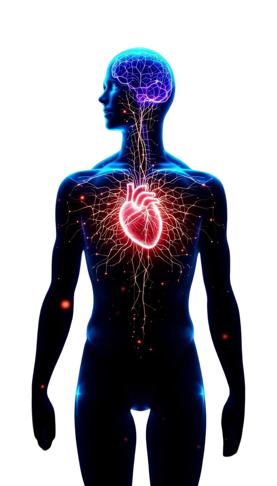

Every Pulse Carries A Purpose
Medicine is more than just science, it is about saving lives.
Healthcare starts within ourselves, where prevention, awareness, and proper daily habits take place. Welcome to CardioCare, dedicated to guiding every beating heart.

About Me
Althea Raya Malicsi
I am a Grade 11 student at Far Eastern Private School. I've always been interested in learning about human anatomy, specifically cardiovascular function. My ultimate dream is to get into a medical school and become a great cardiologist. I believe that becoming a great doctor does not wait until treatments are needed, they create prevention.
Why Do We Advocate Heart Health?
Good health is not only a doctor's job, it requires personal effort and involves proper awareness to take care of ourselves. It takes proper self-care to maintain overall well-being.
Wellness Tracker
Cardiovascular Risks
List of possible risks that affects Heart Health
- Unhealthy Diets : Too much intake of foods that are high in sodium and have added sugars.
- Tobacco : Smoking cigars or vapes damages blood vessels.
- Alcohol Intake : Too much alcohol can raise blood pressure.
- Lack of Physical Activities : Lack of exercise contributes to high blood pressure and obesity.
Active Prevention
Some heart diseases are caused by existing health conditions, family history, and aging. This is why it is important to :
- Schedule Regular Check-ups with a doctor.
- Choosing a proper diet with a heart-friendly choice of foods.
- Consistent Physical movements/activities.
My Mission
The purpose of CardioCare is to utilize digital media to raise awareness for proper Heart Care, highlighting the timeless phrase "prevention is better than cure".
Medical Networks & Contacts
Contact/Visit For More Information :